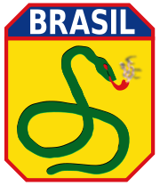
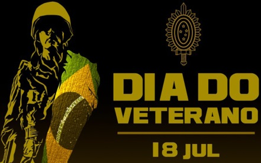

BRIGOLINI, Vinícius. Dia do Veterano do Exército Brasileiro.
Https://militares.estrategia.com/portal/, 18 jul. 2022.
Disponível em: https://militares.estrategia.com/portal/mundo-militar/datas-comemorativas/dia-do-veterano-do-exercito-brasileiro/. Acesso em: 12 out. 2022.

"5 fatos para saber sobre o Dia dos Veteranos" . Defense.gov . Departamento de Defesa dos EUA .
Recuperado em 4 de outubro de 2019
WIKIPEDIA. Veterans Day. In: WIKIPEDIA. Veterans Day.
Https://en.wikipedia.org/wiki/Main_Page, 5 out. 2022.
Disponível em: https://en.wikipedia.org/wiki/Veterans_Day. Acesso em: 12 out. 2022.
Perguntas Frequentes do Dia dos Veteranos, Escritório de Relações Públicas, Departamento de Assuntos dos Veteranos dos EUA. Atualizado em 20 de julho de 2015.
Recuperado em 8 de novembro de 2015.
-
Carter, Julie (novembro de 2003). "Onde começou o Dia dos Veteranos" . Revista VFW . Veteranos de Guerras Estrangeiras dos Estados Unidos. Arquivado do original em 14 de julho de 2012.
-
AFINAL, QUAL A ORIGEM DA EXPRESSÃO"A COBRA ESTÁ FUMANDO"?: Descubra qual foi o motivo da criação da frase que até hoje permanece no vocabulário dos brasileiros. Https://aventurasnahistoria.uol.com.br/noticias/almanaque/historia-segunda-guerra-origem-da-expresao-cobra-esta-fumando.phtml, 16 jun. 2020. Disponível em: https://aventurasnahistoria.uol.com.br/noticias/almanaque/historia-segunda-guerra-origem-da-expresao-cobra-esta-fumando.phtml. Acesso em: 27 out. 2022.
- 
A COBRA vai fumar. Https://pt.wikipedia.org/wiki/A_cobra_vai_fumar#:~:text=O%20ditado%20surgiu%20durante%20o,o%20Brasil%20entrar%20na%20Guerra, 28 maio 2022. Disponível em: https://pt.wikipedia.org/wiki/A_cobra_vai_fumar#:~:text=O%20ditado%20surgiu%20durante%20o,o%20Brasil%20entrar%20na%20Guerra. Acesso em: 27 out. 2022.
- 
CCOMSEX. DIA DO VETERANO – 18 DE JULHO. [S. l.], 14 jul. 2022. Disponível em: https://www.eb.mil.br/web/noticias/noticiario-do-exercito/-/asset_publisher/znUQcGfQ6N3x/content/id/15810026. Acesso em: 27 out. 2022.
- VILLA, Marco. 1932 imagens de uma revolução. [S. l.]: Imprensa oficial, 2008. 208 p. ISBN 978857060695.
-
TEIXEIRA, Raquel. Dia do Orgulho Autista é comemorado nesta sexta-feira. Https://www12.senado.leg.br/radio, 16 jun. 2021. Disponível em: https://www12.senado.leg.br/radio/1/noticia/2021/06/16/dia-do-orgulho-autista-e-comemorado-nesta-sexta-feira. Acesso em: 1 nov. 2022.